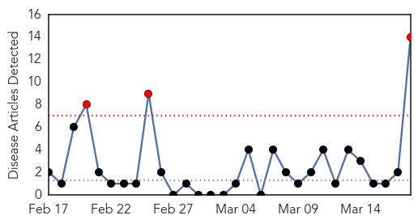

30 Day Trends
Web: 3 alerts, 0 warnings
Twitter: 1 alerts, 0 warnings
Top Articles:
- 0.998
- Meningitis death tied to Princeton outbreak
- 0.996
- Same Meningitis Strain Behind Drexel, Princeton Outbreaks
- 0.995
- Drexel University Student Who Died From Meningitis Was Infected With Princeton Strain
- 0.995
- Same Meningitis Strain Behind Drexel, Princeton Outbreaks: CDC
- 0.994
- Meningitis strain from Princeton University outbreak kills Drexel student
- 0.981
- Meningitis Causing Drexel Student Death Same Strain as Princeton Outbreak
- 0.926
- Drexel Student Died From Meningitis B Strain Found in Princeton Outbreak; CDC Concludes
- 0.894
- Meningitis death tied to Princeton outbreak strain
- 0.872
- Meningitis death tied to Princeton outbreak strain
- 0.871
- Meningitis Death Tied to Princeton Outbreak Strain
- 0.870
- Drexel Student Died Of Same Meningitis Strain Found At Princeton « CBS Philly
- 0.800
- Meningitis B outbreak at Princeton may be linked to Drexel sorority sister's death
- 0.779
- Novartis to seek OK for vaccine for meningitis type B, which killed Upper St. Clair woman
- 0.710
- Novartis' Bexsero meningitis B vaccine approved for infants and adolescents in Australia
Top Tweets:
-
No tweets found for Mar 18, 2014
Web/News Articles
Tweets

Article Locations